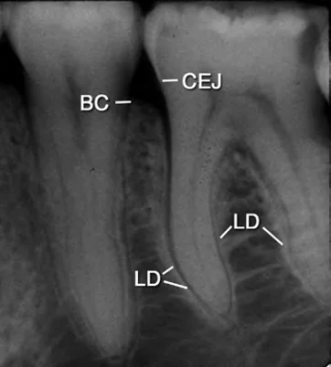

نسخه استخراجشده؛ ترجمه یا تأیید علمی انجام نشده است. وضعیت: captured
زائده آلوئولار بخشی از فک است که حفرههای دندانی را در خود جای میدهد و وابسته به وجود دندان است؛ با کشیدن دندان بهتدریج تحلیل میرود.
استخوان آلوئولار حقیقی (Alveolar Bone Proper): لایه نازکی که مستقیماً دیواره حفره را میپوشاند و الیاف شارپی در آن مدفون میشوند. دو نام دیگر آن: صفحه غربالی (Cribriform Plate) و در رادیوگرافی لامینا دورا.
صفحات کورتیکال: لایههای استخوان متراکم در سمت باکال و لینگوال.
استخوان اسفنجی (Spongy / Cancellous): استخوان ترابکولار بین صفحات کورتیکال و استخوان آلوئولار حقیقی.
⚠️ نکته کلیدی: استخوان آلوئولار حقیقی سوراخدار است؛ از این سوراخها که کانالهای ولکمان نام دارند، عروق و اعصاب از استخوان اسفنجی به PDL میروند. به همین دلیل «صفحه غربالی» نامیده میشود.
بین دو حفرهی مجاور، هستهای از استخوان اسفنجی قرار دارد که در دو طرف با استخوان آلوئولار حقیقی دو دندان محدود شده است؛ به آن سپتوم بیندندانی میگویند. شکل کرست آن از خط واصل CEJ دو دندان مجاور تبعیت میکند: در دندانهای قدامی نوکتیز و در خلفی مسطحتر.
به آن بخشی از استخوان آلوئولار حقیقی گفته میشود که الیاف شارپی در آن مدفون شدهاند. نام «باندل» از همین دستههای فیبری میآید.

لایهبندی موازی با دیواره حفره دارد.
پس از کشیدن دندان، چون دیگر فیبری وجود ندارد، این استخوان سریع تحلیل میرود؛ یکی از دلایل اصلی تحلیل ریج پس از اکستراکشن.
خط رادیواوپک باریکی که دور ریشه دیده میشود و در واقع تصویر همان استخوان آلوئولار حقیقی است.
⚠️ اهمیت بالینی: محو شدن یا قطع شدن لامینا دورا میتواند نشانهی بیماری پریاپیکال، بیماری پریودنتال فعال، ترومای اکلوزال یا بیماریهای سیستمیک مانند هایپرپاراتیروئیدیسم باشد.
📌 سه یافتهی دیگر روی همین فیلم: فضای PDL پهن همراه با لامینا دورای سالم و کرست طبیعی به نفع ترومای اکلوزال است؛ محو شدن فضای PDL به نفع آنکیلوز؛ و ریشهی ضخیم و گرد به نفع هایپرسمنتوز.
| فنستریشن (Fenestration) | دهیسنس (Dehiscence) | |
|---|---|---|
| شکل نقص | پنجرهای منفرد در استخوان | ناودانی از لبه کرست به پایین |
| ارتباط با کرست | کرست استخوان سالم است | کرست استخوان درگیر است |
| نتیجه | بخشی از ریشه بدون پوشش استخوان اما با استخوان بالای آن | سطح ریشه از کرست به پایین برهنه است |
📌 راه ساده تفکیک: اگر نقص به لبه کرست میرسد، دهیسنس است؛ اگر بالای آن استخوان سالم دارد، فنستریشن.
در فک بالا صفحه باکال معمولاً نازک و متخلخل است؛ به همین دلیل بیحسی انفیلتراسیون در ماگزیلا معمولاً مؤثر است.
در فک پایین بهویژه در ناحیه خلفی، صفحه باکال ضخیم و متراکم است؛ به همین دلیل معمولاً به بلاک عصبی نیاز داریم.
⚠️ اشتباه رایج ۱: لامینا دورا، صفحه غربالی و استخوان آلوئولار حقیقی سه نام برای یک ساختار واحدند.
⚠️ اشتباه رایج ۲: زائده آلوئولار وابسته به دندان است؛ بدون دندان تحلیل میرود.
نوع سؤال: ساخت کلمه · 5 خانه
حروف منبع: ح · ل · ت · ی · ل